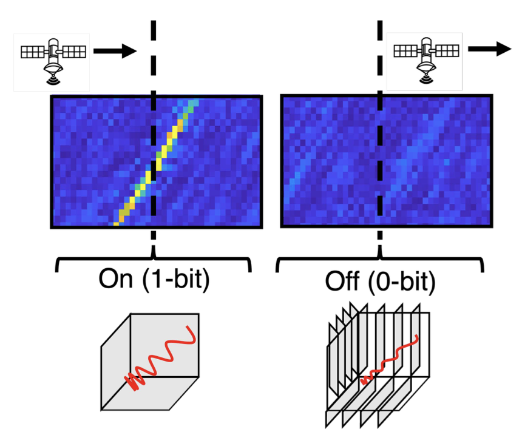
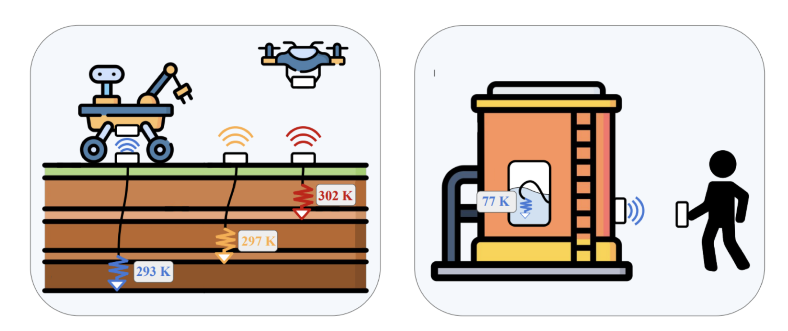
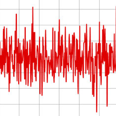

SARLink: Satellite Backscatter Connectivity using Synthetic Aperture Radar
Geneva Ecola, Bill Yen, Ana Banzer Morgado, Bodhi Priyantha, Ranveer Chandra, and Zerina Kapetanovic

Geneva Ecola, Bill Yen, Ana Banzer Morgado, Bodhi Priyantha, Ranveer Chandra, and Zerina Kapetanovic

Jasmin Falconer*, Geneva Ecola*, and Zerina Kapetanovic (* These authors contributed equally.)

Geneva Ecola*, Jida Zhang*, Joseph M. Kahn and Zerina Kapetanovic (* These authors contributed equally.)